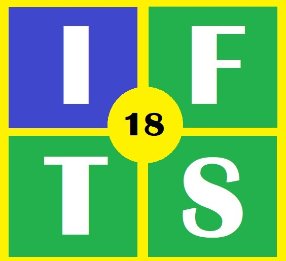

Actualmente me encuentro cursando una técnicatura superior en desarrollo de software, en el Instituto de Formacion Técnica Superior N°18 (IFTS n°18)
Mi objetivo es poder formarme de la mejor manera para en un futuro poder optar por un trabajo en el mundo IT
Es por eso que aparte de la técnicatura, he hecho algunos otros cursos que ayudan a mi formación, como por ejemplo un curso de Desarrollo web en CoderHouse


Con respecto al secundario, puedo contar la peculiaridad de que lo cursé en dos países diferentes. Desde primer año hasta inicios de tercer año lo curse en Venezuela.
Luego, cuando llegue a Argentina curse desde segundo año (tuve que hacer una nivelación, ya que en Venezuela la primaria es hasta 6to grado y en Argentina es hasta 7mo grado) hasta quinto año.
Me egresé en la escuela de comercio N°2 D.E 1 "Dr Antonio Bermejo"